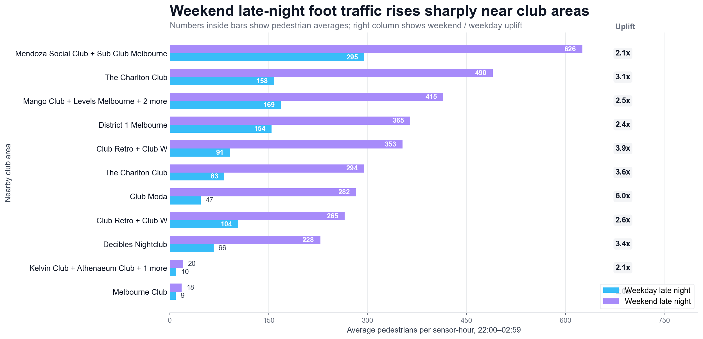
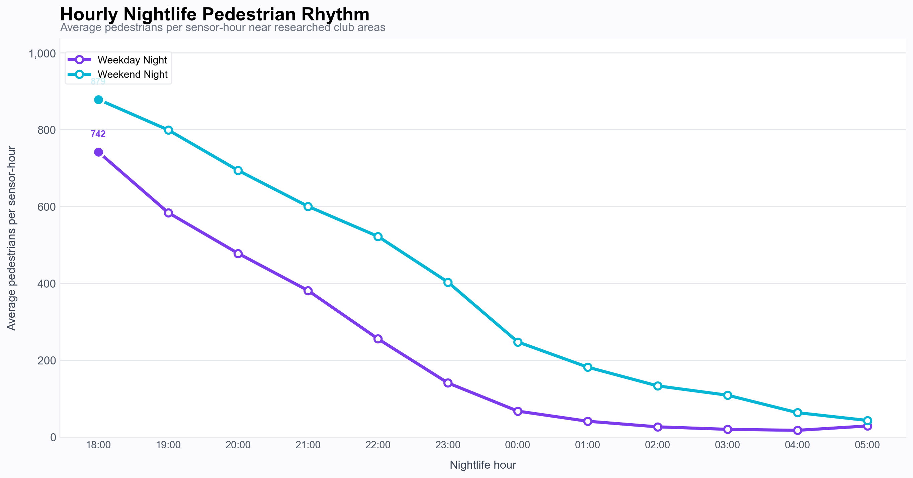
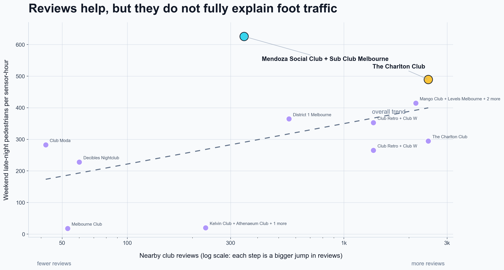

The Setup
Melbourne is famous for its nightlife.
But where do people actually go?
Nightlife reputation is built on stories — word of mouth, social media, and reviews. But behind those stories is something more concrete: foot traffic. People vote with their feet.
We combined two public datasets — Melbourne's pedestrian counting system and club review data — to answer a simple question: which areas of Melbourne see the most real activity on Friday and Saturday nights?
For this analysis, "late night" means 22:00 to 02:59. Because a 1 am Saturday crowd started their night on Friday, we assign early-morning hours back to the previous nightlife date. The data covers May 2024 to May 2026.
Where the sensors and venues are placed
To understand Melbourne’s nightlife patterns, we first mapped the pedestrian sensor network against the bars and clubs. The map shows where the sensors sit across the city, and how each venue is linked to a nearby sensor area.
Blue markers represent City of Melbourne pedestrian sensors, while orange markers represent the researched nightlife venues. Grey lines show the relationship between a venue and the sensor used as its nearby street-activity proxy. More information about the venue or sensor can be found by clicking the markers on the interactive map below.
Sensor and Venue Placement Map
Chapter 01
Weekends change everything
Across the 11 club-adjacent sensor locations we studied, the contrast between a weekday and a weekend night is stark. On Friday and Saturday nights between 22:00 and 02:59, foot traffic near clubs spikes dramatically — in some areas, by a factor of six.
Weekend vs Weekday Late-Night Foot Traffic
Average pedestrians per sensor-hour, 22:00-02:59, with weekend uplift shown at the right

Queen St near Club Moda sees a 6× weekend uplift — the highest ratio of weekend-to-weekday late-night activity in the entire dataset.
Chapter 02
The night builds, then the late signal appears
Foot traffic is highest in the early evening, but that does not automatically mean clubbing. The more distinctive nightlife signal appears later, when weekend activity stays elevated while weekday activity fades.
How the Night Builds Near Club Areas
Hourly context for 18:00–05:00; the main late-night metric remains 22:00–02:59

Chapter 03
Ranking the nightlife areas
We ranked 11 Melbourne nightlife areas by combining pedestrian activity with nearby venue popularity and review quality. Each area is scored out of 100 using five weighted signals: weekend late-night foot traffic, total nearby club reviews, weekend-vs-weekday uplift, review-weighted rating, and the broader hourly nightlife pattern from 18:00 to 05:00.
The goal is not just to find the most reviewed venue or the busiest street, but to identify the areas where popularity, ratings, and real late-night movement line up most strongly.
How to read the score
Nightclubbing score
=
45% weekend late-night foot traffic
+
25% review popularity
+
15% weekend uplift
+
+
5% hourly profile
Nightclubbing Area Rankings
Ranked score out of 100. Hover over the chart to see how each area performs across the scoring components.
Melbourne's top nightlife area is
The Charlton Club
Near 155–161 Russell Street — it scores highest across every dimension of our analysis.
86.4/100
Nightclubbing score
Combining weekend pedestrian intensity, club popularity, weekend uplift,
review-weighted rating, and the broader hourly profile
2,455
Nearby club reviews
The Charlton Club is the most-reviewed venue in the dataset —
by a wide margin
3.1×
Weekend lift
Weekend late-night foot traffic here is 3.1 times higher
than on weekday nights
Some of the other higher scoring venues
The winner cannot only be decided by the numbers. Here are some of the other venues that also scored highly across our metrics. Nightlife is a vibe, after all — and these places are each bringing their own unique energy.


Now explore for yourself
The guided story ends here. Below you'll find the full interactive rankings, a weekend heatmap, seasonal breakdowns by area, and an hour-by-hour animation of Melbourne's nightlife playing out across the city.
Explore 01
From popularity to performance
Before ranking Melbourne’s nightlife areas, we first checked whether online popularity matches real street activity. A venue might have strong reviews, but that does not automatically mean the surrounding area is busy late at night.
The chart below compares nearby club review volume with weekend late-night pedestrian activity. Areas that sit higher and further to the right combine both signals: strong venue popularity and high levels of real foot traffic.
Reviews vs Weekend Foot Traffic
This is a sanity check on the score: review popularity and street activity overlap, but the exceptions explain why both signals matter.

Explore 02
Watch the night unfold
Press play to watch pedestrian activity shift across Melbourne's club areas from early evening through to the small hours of the morning. The animation shows how street-level energy builds and fades through a typical weekend night. You can also scrub the timeline manually.
Hour-by-Hour Weekend Night Build
Use the timeline controls to play or scrub from 18:00 through to 05:00